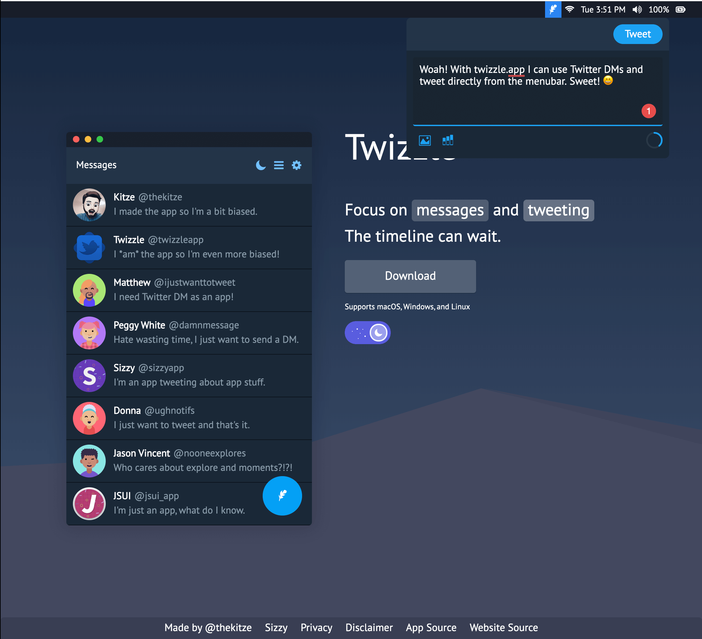

Rating Landing Pages: Twizzle
Dec 24 2019
Twizzle is a Twitter client that focuses on messaging and tweeting only. How do I know this? Because they're entire selling point is explained in one sentence. Amazingly done.
The sentence also acts as an interactive example of how the app works. Hovering over the "messaging" box prompts the image on the left to rise to gain the user's attention.
The real kicker is when you hover over the "tweeting" box the Menu Bar example drops down with an interactive tweet box that also works!
